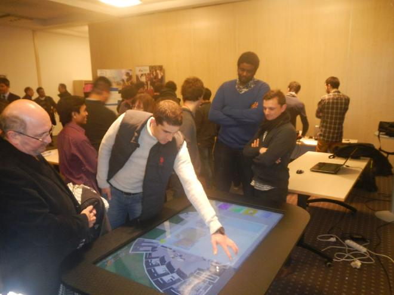

A game developed in collaboration with Quentin Loizeau.
The sun in shinning and the sky is blue. The lush-growing green pastures amid alpine flowers burst with life. Ordianry peaceful, the countriside is buzzing with excitement. No wonder, today is the first mowing day for the four famers of the valley!
But wait a minute, what are the sheep doing outside? They are supposed to be in their barns!
Without their sheep, how are the farmers going to prepare for the harsh winter? Are you ready to help them?
In this game, the key to success is to gather 100 sheep in one barn. Discover how...
Move the sheep
The herds are just wandering in the pastures, looking for the lushiest grass. To bring them back to your barn, the player can push them in the right direction by touching the table. A counter indicates how many sheep are in the barn.
Special actions
To access the special action menu, each player can touch the chubby sheep standing in front of their barn. The player can then trigger the action by touching the corresponding icon and choosing the barn to target. Each action will down the score of the player's barn by a few sheep, but it's worth it !
Send a pack of wolves near the barn of one of his adversary, eating the sheep on their way.
Cost 10 sheep.
Invoke Mother Nature to make the pasture close to a barn more luxurious than anywhere else in the valley and consequently attract more sheep. Feeling generous? It's possible to generate it next to the barn of one of the other player.
Cost 15 sheep.
Send an explosive sheep to another barn. This action will down the score of the targeted barn by 20 sheep.
Cost 10 sheep.
Play viciously by poisoning the surrounding land of a barn.The sheep will avoid the area.
Cost 12 sheep.
This game was created for the tactile table of the Institut Image. Located in the entrance of the building, it's a fun way to welcome visitors and give them a first glimpse of the technology developed onsite.

Visitors trying the tactile table.
The game was developed with Unity in c# and is optimized for a HD 1920*1080 display.
The project was sequenced in 3 canvas: one for the background and sheep, one for the special actions and one for the menu. One of the objective of the project was to handle multi-touching (it can be up to 40 touches at the same time if the 4 players use all their fingers simultaneously).
Sheep gameobjects have colliders and rigidbody to detect the interaction with other gameobjects.
Each touch instantiate a collider and a rigidbody that will act as a shockwave if in contact with a sheep. The icons for the menu and the special actions have Trigger type colliders.
To each barn, a trigger collider that are only trigger by the sheep when they enter. The score is updated accordingly.